Steward
分享是一種喜悅、更是一種幸福
手機 - Cosmo Communicator - Debian - 安裝系統
參考資訊：
https://support.planetcom.co.uk/index.php/Linux_for_Cosmo
https://support.planetcom.co.uk/index.php/Cosmo_Android_Firmware_Manual_Installation
刷機步驟如下：
1. 下載http://support.planetcom.co.uk/download/cosmo-customos-installer-v4.zip
2. 解壓縮到MicroSD根目錄，將此MicroSD插入到Cosmo Communicator
3. 按住ESC + VolumeUp，開啟電源後，放開ESC(VolumeUp持續按住)，VolumeUp位置如下
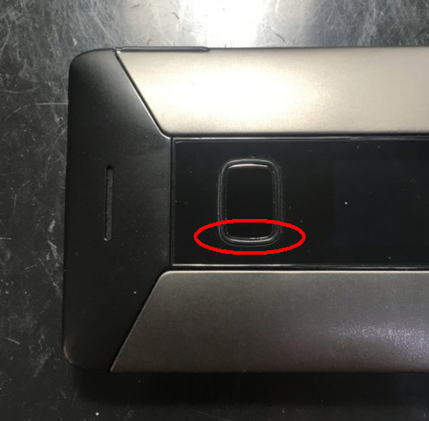
4. 出現如下畫面後，放開VolumeUp
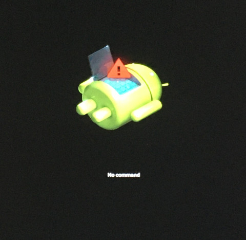
5. 再按一次ESC + VolumeUp就可以出線如下畫面
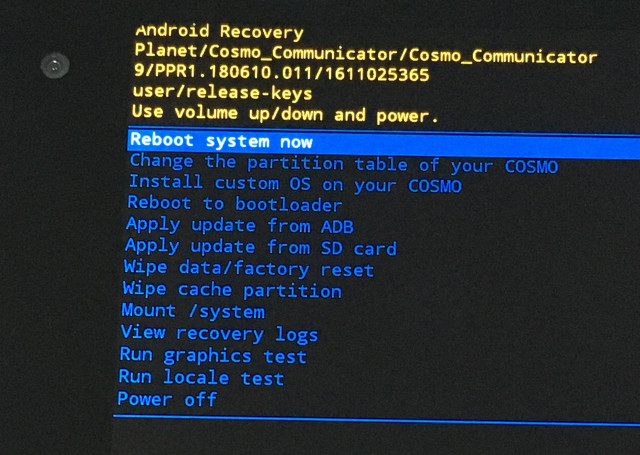
6. 選擇Change the partition table of your COSMO
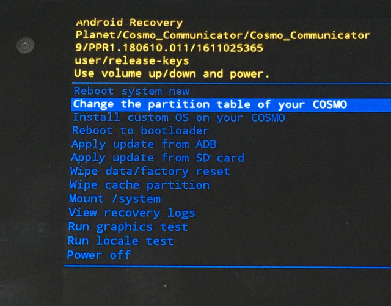
7. 選擇Yes
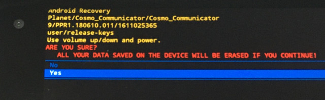
8. 選擇Reserve most of the storage for Linux
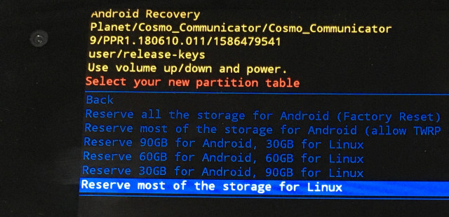
9. 選擇Install custom OS on your COSMO
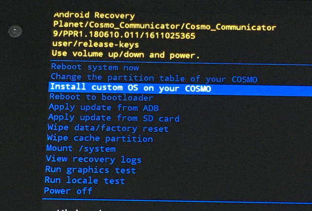
10. 選擇Install Latest Debian KDE/Plasma
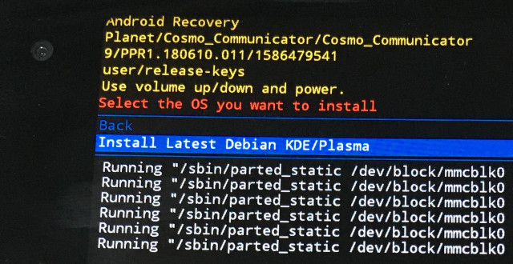
11. 選擇EMPTY_NORMAL_BOOT_3
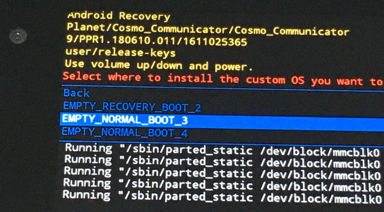
12. 選擇Root system now
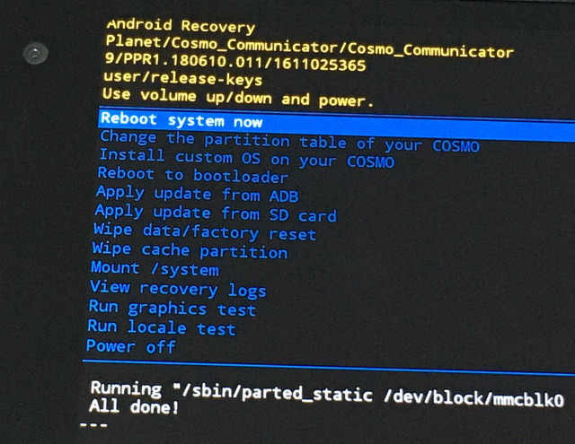
13. 選擇[3] DEBIAN_KDE boot
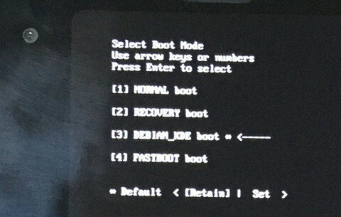
14. 完成後，記得先連上WIFI，否則會遇到程式無法開啟的問題
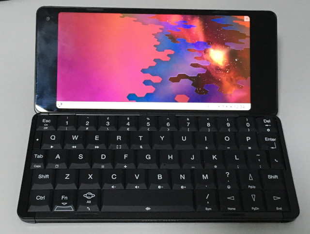
P.S. 帳號密碼(cosmo:cosmo)，如果遇到Could not sync environment to dbus.，重新Reboot即可
KDE支援螢幕縮放，位於：Applications => Settings => System Settings => Display and Monitor => Scale Display
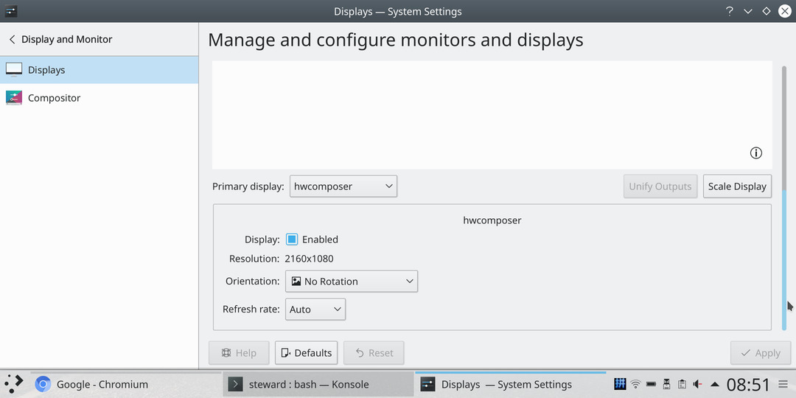
調整成兩倍
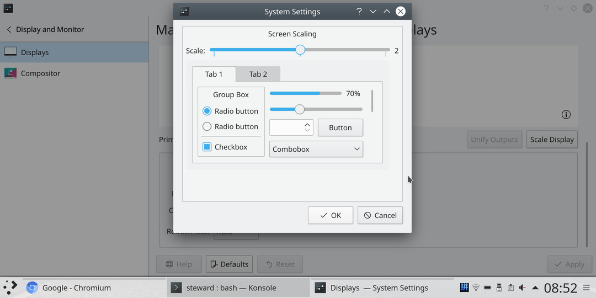
相當不錯的顯示效果
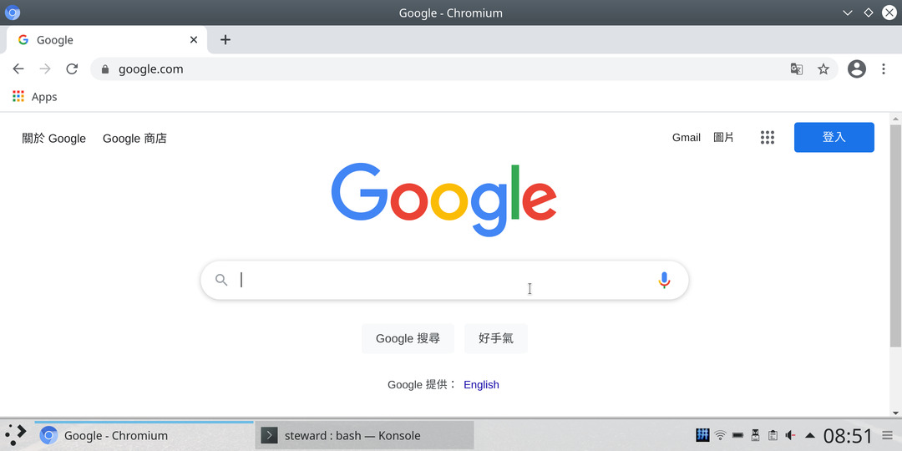